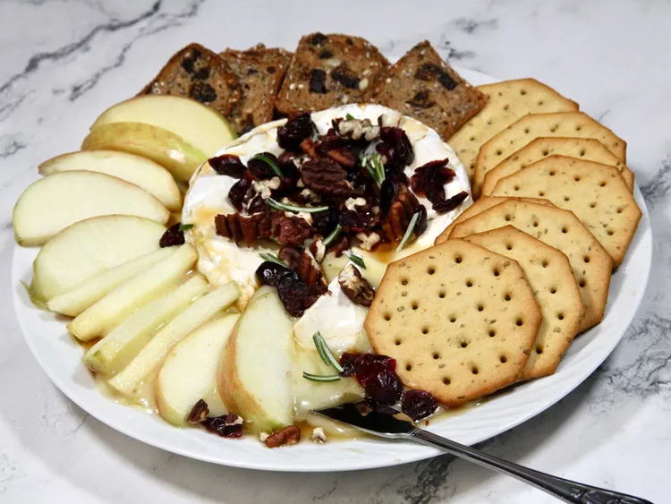

Baked Brie with Honey, Pecans, and Cranberries

Description
One of the easiest appetizers you'll ever make, this dish is always a hit with guests. Pretzel sticks, apple slices, crackers, and crostini are a few suggested accoutrements.
Ingredients
- 1 (8 ounce) wheel Brie cheese
- 2 tablespoons honey
- 1 ½ tablespoons toasted chopped pecans
- 1 ½ tablespoons dried cranberries
- ½ teaspoon minced fresh rosemary (Optional)
Steps
- Preheat the oven to 350 degrees F (175 degrees C). Line a baking sheet with parchment paper. Unwrap Brie; place on the prepared baking sheet.
- Bake in the preheated oven until cheese feels soft, but not completely melted, when you press the center of the wheel with your thumb, 8 to 10 minutes.
- Drizzle honey over Brie on a serving plate, sprinkle with pecans, cranberries, and rosemary.